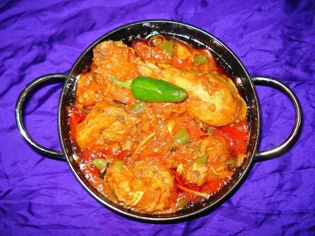

Chicken Karahi Recipe
Classic Pakistani chicken karahi with tomatoes, green chilies, ginger and bold traditional flavour.

Cooking time: 45 min · Serves: 4 · Category: Chicken
Ingredients
- 1 kg chicken, karahi cut
- 6 ripe tomatoes, chopped
- 5 green chilies
- 2 tbsp fresh ginger, julienned
- 1 tbsp garlic paste
- 1 tsp red chili powder
- 1 tsp crushed coriander
- ½ cup cooking oil and salt
How to Make Chicken Karahi
- Heat oil in a karahi.
- Add chicken and fry well.
- Add tomatoes and spices.
- Cook until oil separates.
- Finish with ginger, chilies and coriander.